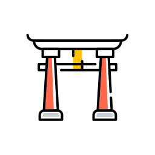
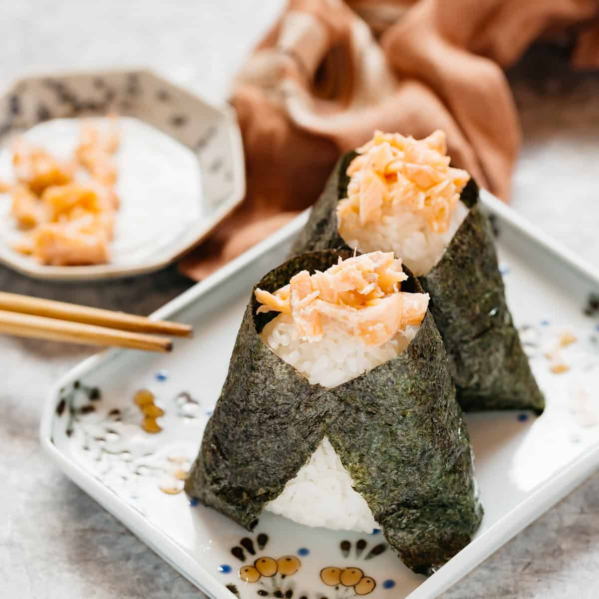
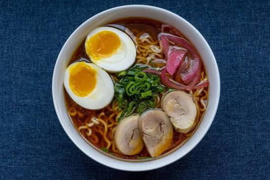
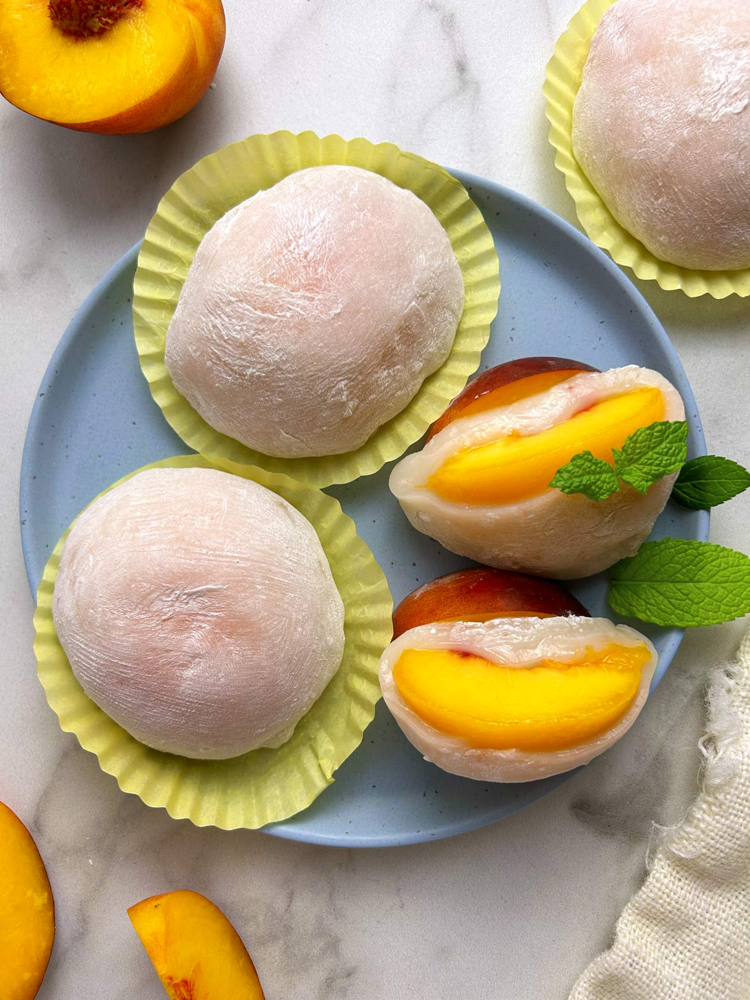
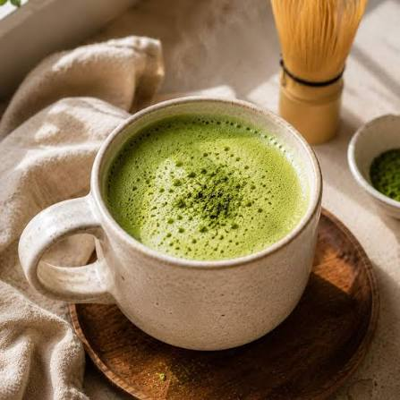
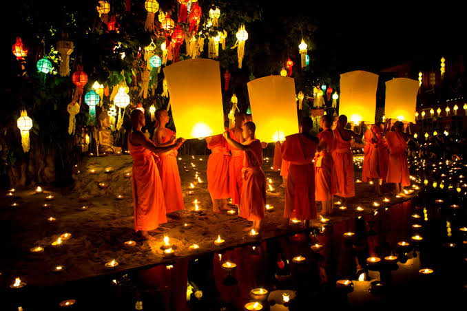
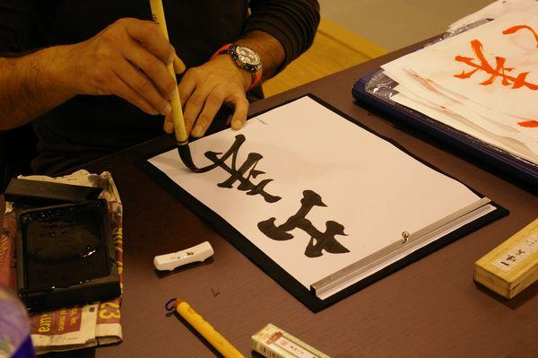

Dia 1 ·
| Horário | Atividade | Local |
|---|---|---|
| 18h | Abertura e cerimônia do chá | Salão principal |
| 19h | Oficina: temaki na medida certa | Cozinha-escola |
| 20h30 | Degustação de saquês regionais | Adega |

Semana da Cultura Japonesa
Semana da Cultura Japonesa
Durante dois dias, o público poderá conhecer pratos tradicionais, participar de oficinas de culinária e acompanhar apresentações culturais.
Cronograma
Confira os horários das oficinas, degustações e apresentações dos dois dias. As oficinas têm vagas limitadas, por isso recomendamos chegar com antecedência.
| Horário | Atividade | Local |
|---|---|---|
| 18h | Abertura e cerimônia do chá | Salão principal |
| 19h | Oficina: temaki na medida certa | Cozinha-escola |
| 20h30 | Degustação de saquês regionais | Adega |
| Horário | Atividade | Local |
|---|---|---|
| 18h | Oficina: caldos de ramen do zero | Cozinha-escola |
| 19h30 | Jantar harmonizado | Pátio externo |
| 21h | Música ao vivo: koto e shamisen (encerramento) | Salão principal |
Sabores do festival
O cardápio reúne alguns pratos e bebidas que podem ser encontrados durante o evento.

Bolinho de arroz recheado, com alga nori crocante. Vegetariano.

Caldo de 12 horas, ovo marinado, cebolinha e broto de bambu.

Sobremesa doce e refrescante. Feitos à mão a cada manhã do festival.

Batido na hora conforme o ritual temae.
Edições anteriores
Algumas imagens que representam a culinária e a ambientação do evento.


Trilha sonora
Uma faixa instrumental para acompanhar a ambientação do evento.
Participe
R$ 45
Acesso a um dia do festival, incluindo uma oficina e uma degustação.
R$ 190
Acesso aos dois dias, com prioridade nas oficinas e brinde de boas-vindas.
R$ 22,50
Estudantes e idosos, mediante apresentação de documento na entrada.